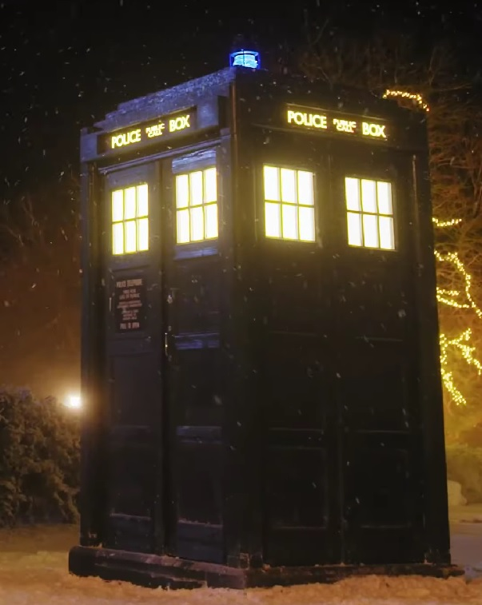

The Tardis
Doctor Who - 1963

CREATOR : The Time Lords
DATE CREATED : Unknown
About the Tardis
The TARDIS stands for Time And Relative Dimension In Space. It is a machine capable of traveling through both time and space. Its most recognizable form is a blue British police box.